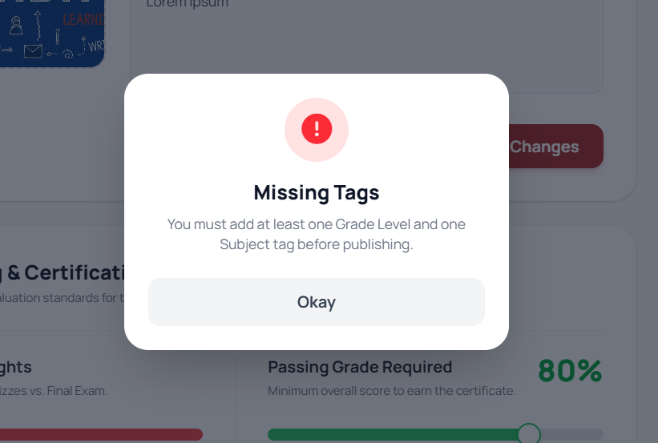
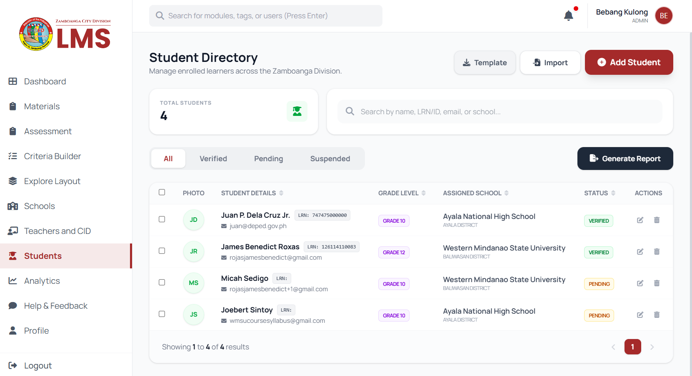

Platform Refinement & System Polish
JB
James Benedict
April 21, 2026
Week 9
During Week 9, we shifted our focus from feature expansion to system refinement and stability. While our formal presentation to the ITO and SDS was postponed due to the absence of Mrs. Genevieve G. Kulong, this unexpected schedule change turned into a valuable opportunity. We utilized this time to apply a final layer of polish to the system, specifically addressing public accessibility and backend robustness to ensure the platform is as intuitive as possible for all users. We also enhanced the layout for managing thee materials to make it more comprehensive.


Our technical work centered on verifying the stability of our core functionalities. We rigorously tested the guest search feature, ensuring that users can quickly locate materials without barriers. Furthermore, we validated the CID administrative roles and the automated student import tools. These systems are now fully stable and performant, which gives us great confidence heading into the rescheduled presentation. We also paid close attention to backward compatibility, ensuring that as we add new layers of data, existing records remain perfectly preserved and accessible.

Beyond the technical fixes, this week was an exercise in patience and preparation. Knowing that the showcase is just a few days away, we have double-checked every user-flow to prevent any potential demo-day errors. The LMS is now in its most stable state, and we are fully prepared to demonstrate these functionalities to the division leadership. I look forward to the feedback from the ITO and SDS, as it will be instrumental in closing out this phase of the internship with a successful deployment.